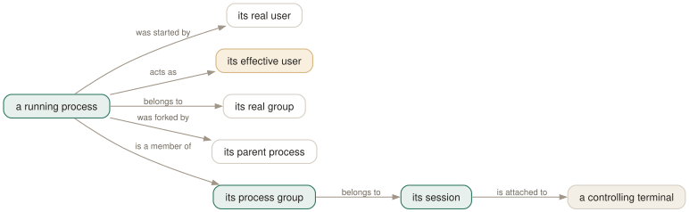

Day 04
Who and whose
Every column of the process table is a criterion in its own right.
By the end of today you can
- choose between
-uand-Uknowing what a setuid program does to the answer - select a process by its place in the tree rather than by its name
- write a useful pgrep query that contains no pattern at all
The pattern was never the important part
Everything so far has been about matching a string. But a name is the weakest fact about a process — it is shared with every other user of the same interpreter, truncated at fifteen characters, and trivially coincidental. The kernel maintains seven other facts that are none of those things, and pgrep has a flag for each.
These are ordinary criteria, so Day 1's rules still apply: they AND with each other and with the pattern, and each one takes a comma list that ORs. What is new is that they are enough on their own. pgrep -P $$ has no pattern and is a perfectly good question.

-U and -u for the two users, -G for the group, -P for the parent, -g, -s and -t for the chain along the bottom. None of them can be faked by a process's command line, which is what makes them worth reaching for before the pattern. The amber box is the one that surprises people: it is usually equal to the real user, and the cases where it is not are exactly the cases you were worried about.Two users, and only one of them can hurt you
Every process carries both a real user — who started it — and an effective user — whose authority it currently acts with. Normally they are the same number and the distinction is invisible. A setuid program is where they come apart, and there is usually one running on your machine right now:
$ pgrep -a -x fusermount3
6008 fusermount3 -o rw,nosuid,nodev,fsname=portal,auto_unmount,subtype=portal -- ...
$ grep ^Uid: /proc/6008/status
Uid: 1000 0 0 0
Real uid 1000, effective uid 0. An unprivileged user started it; it is running as root. The two flags disagree exactly as they should:
$ pgrep -u root -x fusermount3 # -u: effective
6008
$ pgrep -U root -x fusermount3 # -U: real
$ echo $?
1
$ pgrep -U jhrcek -x fusermount3
6008
Position in the tree
The remaining four locate a process by where it sits rather than by what it is. They are the ones that make pgrep usable for jobs whose names you cannot predict.
-P— parent- Direct children only, not descendants.
pgrep -P $$is everything your shell forked and has not reaped. -g— process group- The unit job control signals: one pipeline, one group.
0is translated to pgrep's own group, which under command substitution is smaller than you expect. -s— session- The unit a terminal owns; every job started from one prompt shares it.
0means pgrep's own session, and this is usually the one you wanted when you typed-g 0. -t— controlling terminal- Named without the
/dev/prefix:-t pts/3, not-t /dev/pts/3. Processes with no terminal — every daemon — match nothing here.
From one shell on pts/0, the four answers nest:
$ pgrep -t pts/0 -l # the whole terminal
264115 bash
264312 .claude-unwrapp
$ pgrep -s 264115 -l # the session, same thing here
264115 bash
264312 .claude-unwrapp
$ pgrep -g 264312 -l # one process group inside it
264312 .claude-unwrapp
$ pgrep -P 264115 -l # just the shell's direct children
264312 .claude-unwrapp
The pattern-free query
Once the criteria stand alone, whole classes of question become one-liners that no amount of ps | grep would have got you:
pgrep -u root -c . # how many processes have root's authority
pgrep -P $$ -a # what did this shell start
pgrep -t pts/3 -a # what is running in that other window
pgrep -s 0 -a # everything in my terminal session
pgrep -G docker -a # everything a group can reach
The odd one out is -p, which takes PIDs directly. It is not a lookup — you already know the PIDs — it is a filter, and its value is that it composes with everything else:
$ pgrep -p 1,832 -l systemd
1 systemd
832 systemd-journal
That asks "of these two PIDs, which are named something with systemd in it". Without -p you would write a loop. Like -Q yesterday, it exists in --help and nowhere in the manual page.
Today's habit
Before you type a pattern, ask whether a criterion would be sharper. "The thing I started" is -P $$. "The thing in that window" is -t. "The thing running as root" is -u. Patterns are for when you genuinely do not know where the process came from.
Tomorrow the criteria stop being facts about identity and start being facts about time and state — and -v arrives, which negates rather more than its one-line description admits.
# Day 4: what has root's authority right now - effective uid, not real.
pgrep -u root -a
# Day 4: what did this shell start, whatever it happens to be called.
pgrep -P $$ -a
New vocabulary
Commands
| Command | Does |
|---|---|
pgrep -P $$ | Everything your current shell forked directly. |
pgrep -t pts/3 -a | Everything running on one terminal — the other window. |
pgrep -g 0 | Processes in pgrep's own process group; -s 0 does the same for the session. |
Options
| Option | Does |
|---|---|
-u, --euid | Match on the effective user — the authority the process is acting with. |
-U, --uid | Match on the real user — who started it. |
-G, --group | Match on the real group. Name or number. |
-P, --parent | Match processes whose parent is one of these PIDs. |
-g, --pgroup | Match on process group. 0 means pgrep's own. |
-s, --session | Match on session ID. 0 means pgrep's own. |
-t, --terminal | Match on controlling terminal, named without /dev/. |
-p, --pid | Match only these PIDs — a filter, not a lookup. Undocumented. |
Drillsdo these in a real terminal, today
Self-check
Answer out loud first, then unfold.
A monitoring check uses pgrep -U root -x fusermount3 and never fires, but pgrep -u root -x fusermount3 finds the process every time. Which is correct?
Both are correct answers to different questions. fusermount3 is setuid root: it was started by an ordinary user and runs with root's authority. Its /proc/PID/status says Uid: 1000 0 0 0 — real 1000, effective 0.
-U asks who started it, -u asks what it can do. For a security question — "what is running as root on this box" — you want -u, because effective privilege is the thing that can hurt you. For an accounting question — "what is this user running" — you want -U. The mnemonic that sticks is that the lowercase, easier-to-type one is the one you want more often.
You add -g 0 to a query to restrict it to "this shell's process group", and it returns almost nothing — not even the other jobs you started. Why?
Because 0 means pgrep's own process group, and in an interactive shell with job control each pipeline gets a process group of its own. pgrep's group contains the command substitution it is running inside and very little else.
-s 0 is nearly always what people mean: the session is the whole terminal, shared by every job you have started from that prompt. Process groups are the unit job control signals; sessions are the unit a terminal owns.
Why is pgrep -P $$ more reliable than pgrep -f 'the command I just launched' for finding a child you started?
Because the parent relationship is a fact the kernel maintains, and the command line is a string that other processes are free to contain. -P $$ cannot match your editor, cannot match the grep in someone's pipeline, and cannot match the shell doing the asking.
It has one real limitation: a process that daemonises is reparented to init and drops out of the result immediately. For those, the PID you were given by $! — or a pidfile, which is Day 6 — is the honest answer.
What does pgrep -p 1234,5678 do that kill -0 1234 does not?
-p is a filter, not a lookup. On its own it simply confirms which of those PIDs exist, but its purpose is to compose: pgrep -p 1234,5678 -u root -f worker asks whether those specific processes are also root-owned workers, and answers about each one.
It is the way to re-ask a narrower question about a set of PIDs you already have, without a loop. It is also entirely absent from pgrep(1) — --help is the only documentation.
Cheat sheet
pgrep -u USER # EFFECTIVE uid - what it can do <- the security question
pgrep -U USER # REAL uid - who started it <- the accounting question
pgrep -G GROUP # real group (there is no effective-group flag)
pgrep -P PPID # direct children only; daemons reparent away to init
pgrep -g PGID # process group; 0 = pgrep's own
pgrep -s SID # session; 0 = pgrep's own <- usually what you meant
pgrep -t pts/3 # controlling terminal, WITHOUT /dev/
pgrep -p 1,832 # filter an existing list of PIDs; composes with the rest
#
# All take name-or-number and comma lists. All AND together.
# An unknown user name is exit 2, not an empty result.
Everything through Day 04
Commands
| Command | Does |
|---|---|
pgrep sshd | List the PID of every process whose name matches the ERE sshd. |
pgrep -u root sshd | Two criteria, AND-ed: owned by root and named sshd. |
pgrep -u root,daemon | One criterion, OR-ed: owned by root or by daemon. No pattern at all. |
pgrep 'systemd|cron' | One ERE, two alternatives. Two bare patterns would be an error. |
pgrep --version | Print the procps-ng version this course is checked against. |
pgrep -f 'python3 .*worker' | Match the full command line, so the interpreter's arguments count. |
pgrep -x systemd | Only processes named exactly systemd — not systemd-logind. |
pgrep -A -f myscript.sh | Match command lines, but ignore every ancestor of this pgrep. |
cat /proc/PID/comm | The 15-character name pgrep matches by default. |
tr '\0' ' ' < /proc/PID/cmdline | The full command line pgrep matches under -f. |
ps -fp $(pgrep -d, -x sshd) | The man page's own idiom: hand a comma list to ps. |
renice +4 $(pgrep chrome) | Word-splitting turns newline-separated PIDs into separate arguments. |
pgrep -a -Q -f worker | List command lines with argument boundaries preserved. |
pgrep -P $$ | Everything your current shell forked directly. |
pgrep -t pts/3 -a | Everything running on one terminal — the other window. |
pgrep -g 0 | Processes in pgrep's own process group; -s 0 does the same for the session. |
Options
| Option | Does |
|---|---|
-c, --count | Print how many processes matched instead of their PIDs. |
--quiet | Print nothing; the exit status is the whole answer. Long form only. |
-f, --full | Match against the whole command line instead of the process name. |
-x, --exact | Require the pattern to match the whole string, not a part of it. |
-i, --ignore-case | Match case-insensitively. |
-A, --ignore-ancestors | Drop every ancestor of this pgrep from the result. The fix for -f in scripts. |
-l, --list-name | Print the process name after the PID. Still the 15-character name, even under -f. |
-a, --list-full | Print the full command line after the PID. |
-Q, --shell-quote | Shell-quote each argument in -a output, so boundaries survive. Undocumented. |
-d, --delimiter | Join the PIDs with this string instead of a newline. A trailing newline is still added. |
-u, --euid | Match on the effective user — the authority the process is acting with. |
-U, --uid | Match on the real user — who started it. |
-G, --group | Match on the real group. Name or number. |
-P, --parent | Match processes whose parent is one of these PIDs. |
-g, --pgroup | Match on process group. 0 means pgrep's own. |
-s, --session | Match on session ID. 0 means pgrep's own. |
-t, --terminal | Match on controlling terminal, named without /dev/. |
-p, --pid | Match only these PIDs — a filter, not a lookup. Undocumented. |